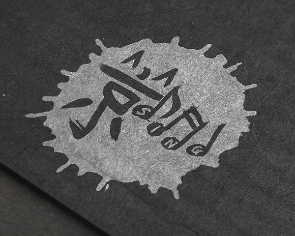
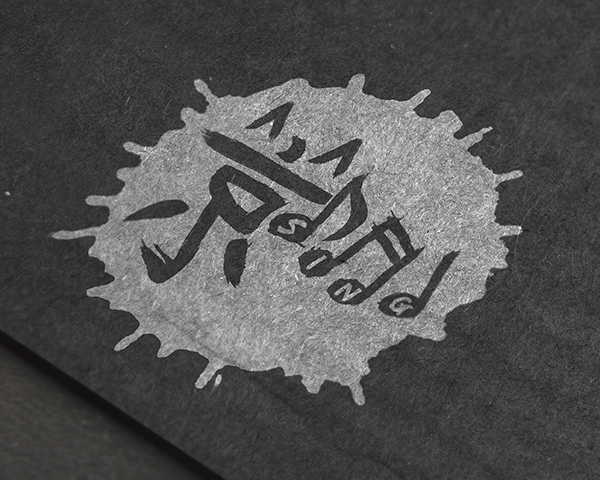

Ted Patterson
Ted Patterson
JingSing
When singers find one another.
 

Type
Freelance & Volunteer
Roles
Brand, logo, and poster designer + vocalist
Timeline
October 2014 – June 2015
After moving to Beijing, a good friend of mine, Christiana Zhu, took it upon herself to single-handedly pull together great musicians and singers from across metropolitan area and start up a choir. I ended up connecting with Christiana sometime in the beginning and, after some usual daydreaming, I proposed the name, JingSing, and some logo concepts to the group. The remainder of my time with them was spent producing concert posters from members’ ideas and artwork and making good, musical memories.
I no longer live in China, but you better believe that I miss this bunch. They’re all wonderful singers and choir members, but they’re even better human beings. To say that I hope to cross paths with each and every one of them again someday would be a major understatement.